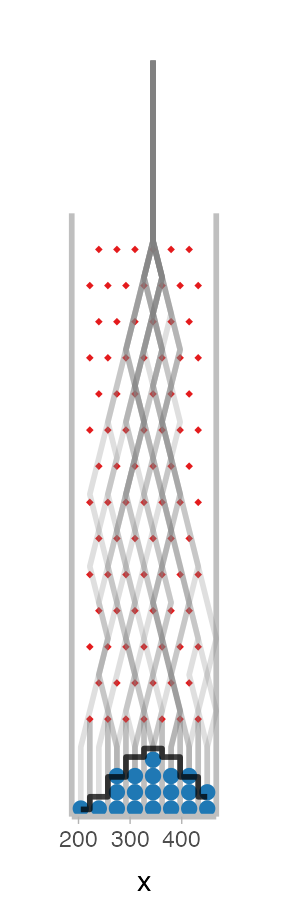
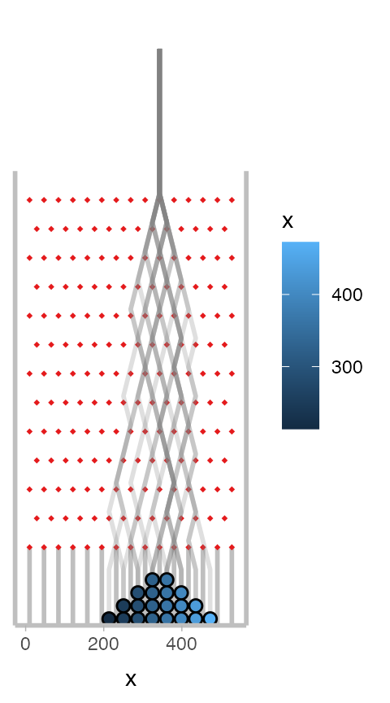
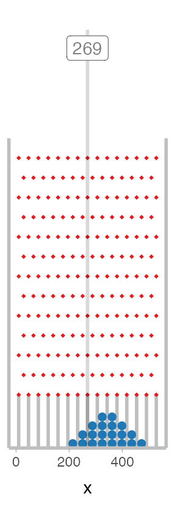
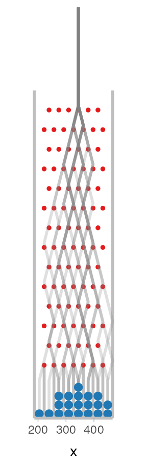
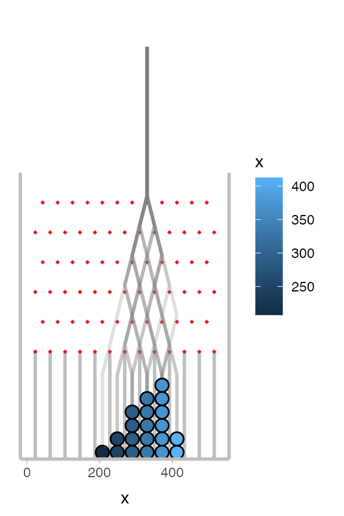
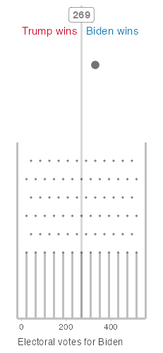

Presidential Plinko
presidential_plinko.RmdThe following code constructs a Plinko board for a quantile dotplot of a predictive distribution for the 2020 US Presidential election outcome.
See presidential-plinko.com and the mjskay/election-galton-board repository for more information.
Setup
The following packages are required for this example:
##
## Attaching package: 'dplyr'## The following objects are masked from 'package:stats':
##
## filter, lag## The following objects are masked from 'package:base':
##
## intersect, setdiff, setequal, unionDesired target sample
Say we’ve taken 50 quantiles from a predictive distribution for the number of electoral votes Biden will receive in the 2020 US Presidential election:
# this 20 quantiles from the Economist's forecast as of Sept 29, 2020. x = c(213, 243, 266, 279, 290, 304, 310, 319, 323, 333, 339, 345, 352, 357, 363, 372, 374, 385.125, 399, 415) tibble(x) %>% ggplot(aes(x = x)) + geom_dots() + xlab("Predicted electoral votes for Biden") + xlim(0, 538)

What we would like to do is construct a Plinko board that “sediments” into this dotplot. That is, it gives us an animation of a plausible random process that could have led to a dotplot that looks like the one above. This will take several steps.
Constructing the board
First, to determine the board dimensions, we need to decide on the number of draws we will take and the number of pins in one row of the board (equivalently, the size of the Binomial distribution we are simulating with the board):
n_bin = 6 bin_width = 41
Then we can construct the Plinko board:
set.seed(12345) board = plinko_board( x, n_bin, bin_width, center = 330.5, limits = c(0, 538)#, total_height = 2445 ) board
## A Plinko Board with 20 balls and 6 bins centered at 330.5Plotting the board
Using autoplot()
The Plinko board will automatically find random paths the balls could have taken to end up in their final locations. We can see these paths by plotting the board with the autoplot() function, which returns a ggplot() object:
board %>% autoplot()

By default the plot overlays the Binomial distribution implied by the Plinko board so you can judge the quality of the approximation. We can also turn this off:
board %>% autoplot(show_dist = FALSE)

You can also see the board without paths by passing show_paths = FALSE, and you can plot specific frames of the animation by passing the frame parameter:
autoplot(board, show_paths = FALSE, frame = 9)

Plotting manually
We could also create a plot like the ones above manually by using the slot_edges(), pins(), paths(), and balls() unctions, which return data frames containing the locations of all of the elements of the board:
ggplot() + geom_segment(aes(x = x, y = 0, xend = x, yend = height), data = slot_edges(board), color = "gray75", size = 1) + geom_point(aes(x, y), data = pins(board), shape = 19, color = "#e41a1c", size = 1) + geom_path(aes(x = x, y = y, group = ball_id), data = paths(board), alpha = 1/4, size = 1, color = "gray50") + geom_circle(aes(x0 = x, y0 = y, r = width/2), data = balls(board), fill = "#1f78b4", color = NA) + coord_fixed(expand = FALSE, clip = "off") + ylab(NULL) + scale_y_continuous(breaks = NULL) + theme( axis.line.y = element_blank(), axis.line.x = element_line(color = "gray75", size = 1) )

However, if you wish to customize the plot, it is probably easier to use the modify_layer() and add_layers() functions described in the next section, as these also impact the frames used when an animated plot is rendered.
Customizing frames
You can customize the existing layers in the ggplot objects generated for each frame using the modify_layer() function, which takes a layer name followed by parameters you would normally pass to a ggplot layer/geom. Aesthetic mappings you provide are merged with the existing aesthetics in the layer, and new arguments you provide override existing ones.
For example, say you want to make the ball fill color depend on its x position, and change the outline color to be black:
board %>% modify_layer("balls", aes(fill = x), color = "black") %>% autoplot(show_dist = FALSE)

You can use modify_layer() to adjust the following layers:
- “slot_edges”: A
geom_segment()that draws the edges of the slots - “pins”: A
geom_point()that draws the pins - “paths”: A
geom_path()that draws ball paths - “balls”: A
geom_circle()that draws the balls - “dist”: A
geom_step()that draws the reference binomial distribution
When plotting a single frame, you can also add additional ggplot objects after the call to autoplot(), as with any ggplot object:
board %>% autoplot(show_dist = FALSE, show_paths = FALSE) + geom_vline(xintercept = 269, color = "black", alpha = 0.15, size = 1) + annotate("label", x = 269, y = 1500, label = "269", hjust = 0.5, color = "gray50")
However, layers added in this way are not saved into the board object, and so will not be displayed when the board is animated.
To add ggplot objects to the board object so that they are displayed when the board is animated, you must use the add_layers() function before calling autoplot() or animate(). Here is the same example using add_layers():
board %>% add_layers( geom_vline(xintercept = 269, color = "black", alpha = 0.15, size = 1), annotate("label", x = 269, y = 1500, label = "269", hjust = 0.5, color = "gray50") ) %>% autoplot(show_dist = FALSE, show_paths = FALSE)

As static plots, both look identical. However, when we get to animating (next), we’ll have to use the add_layers() approach.
Animating the board
By default, no tweening is done between balls on the board:
board %>% # width is determined automatically based on height animate(fps = 7.5, height = 500)
Most likely you will want some tweening between ball states. I find that using 4 times the base number of frames with a "bounce-out" easing function (the default) makes for a smooth animation that feels more physically accurate. You can add tweening using the tween_balls() function. You’ll also want to increase the fps to account for the additional frames, and we will add a 3-second (90-frame) pause at the end of the animation using end_pause:
board %>% tween_balls(frame_mult = 4, ease = "bounce-out") %>% animate(fps = 30, height = 500, end_pause = 90)
For testing purposes (e.g. faster rendering), it can also be useful to filter the frames in the final animation. You can do this using filter_frames(), which takes filtering conditions in the same format as filter() and applies them to the data frame returned by frames(board). The "ball_id" column can be combined with the "stopped" column (which is TRUE after the ball hits the bottom of a slot and stops moving) to show just one ball dropping, for example:
board %>% filter_frames(ball_id == 1, !stopped) %>% tween_balls(frame_mult = 4, ease = "bounce-out") %>% animate(fps = 30, height = 500)

A full, annotated board
Finally, we can combine everything together to adjust the existing geometries with modify_layer(), add annotations with add_layers(), add tweening with tween_balls(), then animate:
Biden_color = "#0571b0" Trump_color = "#ca0020" annotation_height = 1400 board %>% modify_layer("pins", color = "gray50") %>% # the "balls" layer uses the frame(board) data frame, which has a "region" # column giving the part of the board the ball is in ("start", "pin", or "slot") # we can use this to change the ball color when it falls into the slot modify_layer( "balls", aes(fill = ifelse(region == "slot", ifelse(x <= 269, "Trump", "Biden"), "none")), color = NA ) %>% add_layers( geom_vline(xintercept = 269, color = "black", alpha = 0.15, size = 1), annotate("text", x = 290, y = 0.92 * annotation_height, label = "Biden wins", hjust = 0, color = Biden_color, ), annotate("text", x = 250, y = 0.92 * annotation_height, label = "Trump wins", hjust = 1, color = Trump_color ), annotate("label", x = 269, y = 0.97 * annotation_height, label = "269", hjust = 0.5, color = "gray50", fontface = "bold" ), expand_limits(y = annotation_height), scale_fill_manual( limits = c("none", "Biden", "Trump"), values = c("gray45", Biden_color, Trump_color), guide = FALSE ), theme(axis.title.x = element_text(hjust = 0, size = 10, color = "gray25")), xlab("Electoral votes for Biden") ) %>% tween_balls(frame_mult = 4, ease = "bounce-out") %>% animate(fps = 30, height = 500, end_pause = 90)
